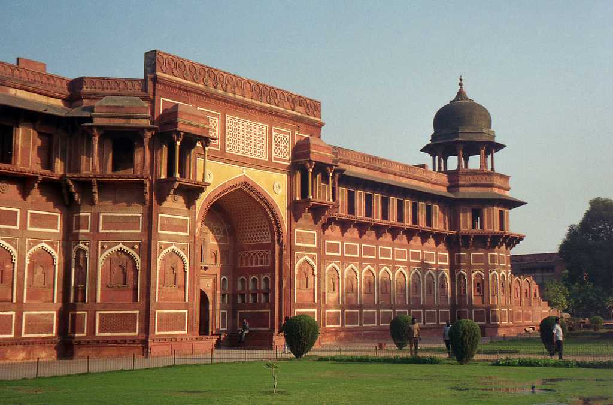

Ajanta and Ellora Caves
Ajanta and Ellora caves are among the major attractions in the state of Maharashtra. These ancient caves are considered to be one of the most important monuments of India owing to the magnificent paintings of Ajanta and well-carved sculptures of Ellora. The rock-cut caves containing carvings are the finest example of Indian paintings and sculpture.
Agra Fort
Also known as Lal Qila, Fort Rouge or Red Fort of Agra, the Agra Fort is a UNESCO world heritage site. It is situated at a distance of about 2.5 km north-west of the famous Taj Mahal. The construction of the massive fort of red sandstone by the banks of Yamuna river was started by emperor Akbar.
Amer Fort

Perched atop a hill in Jaipur, Amber Fort, also known as Amer Fort, is a majestic fortification built from pale yellow and pink sandstone and white marble. Established in 1592 by Raja Man Singh, the fort combines both Hindu and Mughal architecture. Inside, visitors can marvel at the Diwan-i-Aam, Sheesh Mahal, and the Sukh Niwas, where a cool breeze circulates, amplifying the grandeur of the fort.